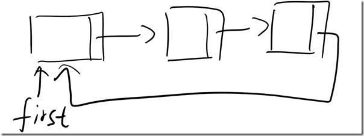
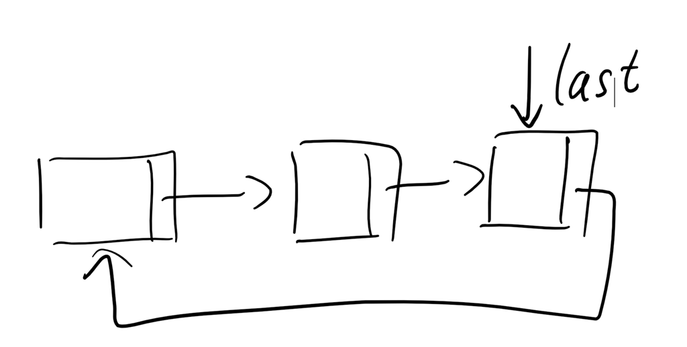
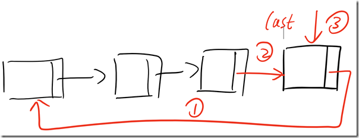
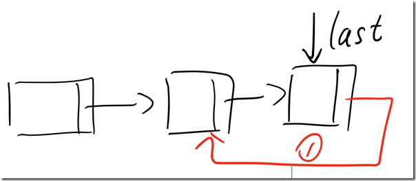

© 2019 《算法（第四版）》C# 题解 | Provided By 沈星繁
搜索解答
目前已完成到 2.5
1.3.29
上次更新：2019-02-11
题目
1.3.29 用环形链表实现 Queue。 环形链表也是一条链表，只是没有任何结点的链接为空，且只要链表非空则 last.next 的值为 first。 只能使用一个 Node 类型的实例变量（last）。
解答
其实就是一个长这样的链表： 
显然说 first 和最后一个节点的指针重复了，所以我们只需要保留 last 的指针就行了。 
入队（注意顺序） 
出队

代码
Queue.cs
using System;
using System.Collections;
using System.Collections.Generic;
using System.Text;
namespace _1._3._29
{
public class Queue<Item> : IEnumerable<Item>
{
private Node<Item> last;
private int count;
/// <summary>
/// 默认构造函数。
/// </summary>
public Queue()
{
this.last = null;
this.count = 0;
}
/// <summary>
/// 检查队列是否为空。
/// </summary>
/// <returns></returns>
public bool IsEmpty()
{
return this.last == null;
}
/// <summary>
/// 返回队列中元素的数量。
/// </summary>
/// <returns></returns>
public int Size()
{
return this.count;
}
/// <summary>
/// 返回队列中的第一个元素（但不让它出队）。
/// </summary>
/// <returns></returns>
public Item Peek()
{
if (IsEmpty())
throw new InvalidOperationException("Queue underflow");
return this.last.next.item;
}
/// <summary>
/// 将一个新元素加入队列中。
/// </summary>
/// <param name="item">要入队的元素。</param>
public void Enqueue(Item item)
{
Node<Item> oldLast = this.last;
this.last = new Node<Item>();
this.last.item = item;
this.last.next = this.last;
if (oldLast != null)
{
this.last.next = oldLast.next;
oldLast.next = this.last;
}
count++;
}
/// <summary>
/// 将队列中的第一个元素出队并返回它。
/// </summary>
/// <returns></returns>
public Item Dequeue()
{
if (IsEmpty())
throw new InvalidOperationException("Queue underflow");
Item item = this.last.next.item;
this.last.next = this.last.next.next;
this.count--;
if (IsEmpty())
this.last = null;
return item;
}
public override string ToString()
{
StringBuilder s = new StringBuilder();
foreach (Item item in this)
{
s.Append(item);
s.Append(" ");
}
return s.ToString();
}
public IEnumerator<Item> GetEnumerator()
{
return new QueueEnumerator(this.last);
}
IEnumerator IEnumerable.GetEnumerator()
{
return GetEnumerator();
}
private class QueueEnumerator : IEnumerator<Item>
{
private Node<Item> current;
private Node<Item> first;
public QueueEnumerator(Node<Item> last)
{
this.current = new Node<Item>();
this.current.next = last.next;
this.first = this.current;
}
Item IEnumerator<Item>.Current => this.current.item;
object IEnumerator.Current => this.current.item;
void IDisposable.Dispose()
{
this.first = null;
this.current = null;
}
bool IEnumerator.MoveNext()
{
if (this.current.next == first.next)
return false;
this.current = this.current.next;
return true;
}
void IEnumerator.Reset()
{
this.current = this.first;
}
}
}
public class Node<Item>
{
public Item item;
public Node<Item> next;
}
}Program.cs
using System;
namespace _1._3._29
{
/*
* 1.3.29
*
* 用环形链表实现 Queue。
* 环形链表也是一条链表，只是没有任何结点的链接为空，且只要链表非空则 last.next 的值为 first。
* 只能使用一个 Node 类型的实例变量（last）。
*
*/
class Program
{
static void Main(string[] args)
{
string input = "to be or not to - be - - that - - - is";
string[] s = input.Split(' ');
Queue<string> queue = new Queue<string>();
foreach (string n in s)
{
if (!n.Equals("-"))
queue.Enqueue(n);
else if (!queue.IsEmpty())
Console.WriteLine(queue.Dequeue());
}
Console.WriteLine($"({queue.Size()}) left on queue");
Console.WriteLine(queue);
}
}
}